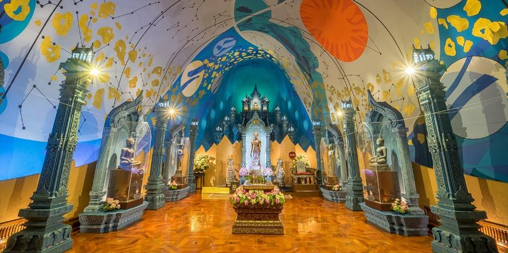
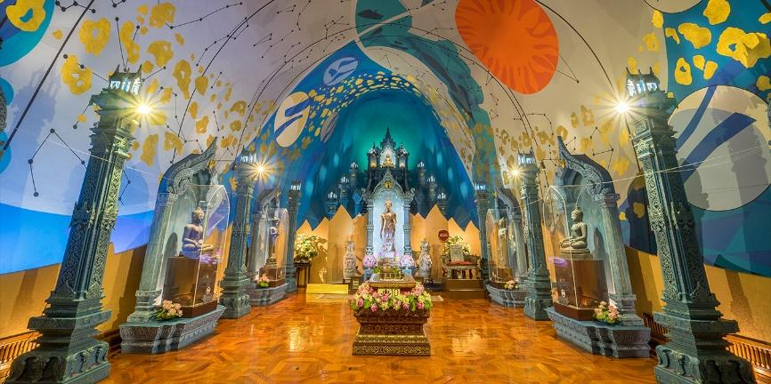
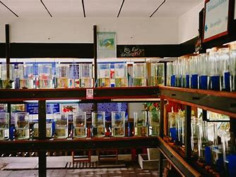
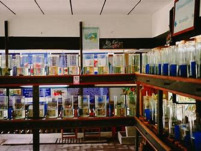
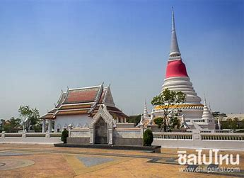
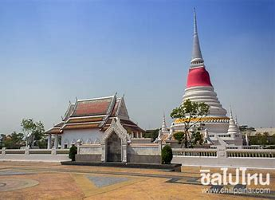
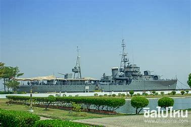
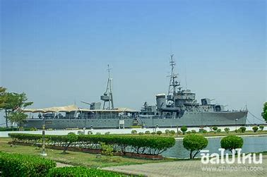
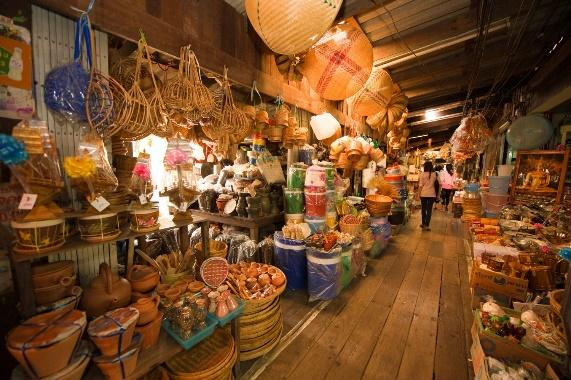
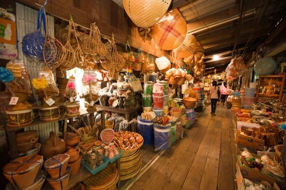

สถานที่ท่องเที่ยวในจังหวัดสมุทรปราการ
1. พิพิธภัณฑ์ช้างเอราวัณ
 

เมื่อคิดว่าจะเดินทางมาเที่ยวสถานที่ท่องเที่ยวใน จ.สมุทรปราการ พิพิธภัณฑ์ช้างเอราวัณจะเป็นสถานที่แรกๆ ที่คนทั่วไปนึกถึง โดยมีระยะทางไม่ไกลจาก กรุงเทพฯ เพราะเนื่องจากความยิ่งใหญ่อลังการงานสร้างของผู้ที่ก่อสร้าง โดยใช้ช้างสามเศียรขนาดใหญ่มาเป็นจุดสังเกตของสถานที่แห่งนี้ พร้อมทั้งด้านในยังมีงานศิลปะต่างๆ มากมายให้ชื่นชม ทั้งรูปปั้นพระพุทธรูปต่างๆ และศิลปะตามยุคสมัย ที่สะท้อนให้เห็นถึงอารยธรรมของคนในพื้นที่จนกลายมาเป็นมรดกตกทอดจนถึงรุ่นปัจจุบัน โดยเมื่อเข้าไปด้านในพิพิธภัณฑ์ช้างเอราวัณเรียบร้อยแล้ว จะเห็นการแบ่งพื้นที่ทั้งหมดออกเป็น 3 ส่วนด้วยกัน คือ ชั้นบนสุดชื่อว่า ชั้นจักรวาล ชั้นกลางชื่อว่า ชั้นโลก และชั้นล่างสุดมีชื่อว่า ชั้นสุวรรณภูมิ
เวลาเปิดให้บริการ: 09.00-18.00 น.
ที่อยู่: หมู่ที่1 99 ถ. กาญจนาภิเษก ตำบล บางเมืองใหม่ อำเภอเมืองสมุทรปราการ สมุทรปราการ
2. พิพิธภัณฑ์ปลากัดไทย
 

หากเพื่อๆ ท่านใดชื่นชอบความสวยงามและความเป็นเอกลักษณ์เฉพาะตัวของปลากัน ขอแนะนำเชิญมาเที่ยวชมที่พิพิธภัณฑ์ปลากัดไทย เนื่องจากสถานที่แห่งนี้มีพันธุ์ปลากัดไทยเป็นจำนวนมาก ในลวดลายตามสายพันธุ์ที่แตกต่างกันไป รวมถึงเสน่ห์การว่ายน้ำของปลากัดที่มีหาง และครีบที่พริ้มไหวงดงามเคลื่อนไหวในสายน้ำอย่างมีอิสระ จึงทำให้ยี่ห้อโทรศัพท์ชื่อดังเอาไปใช้เป็นส่วนหนึ่งของรุ่นใหม่ล่าสุดกันเลยทีเดียว
เวลาเปิดให้บริการ: เฉพาะวัน เสาร์ และวันอาทิตย์ เวลา 10.00-17.00 น.
ที่อยู่: หมู่ 3, 18/1 ซอยวัดราษฎร์รังสรรค์ เพชรหึงส์, พระประแดง, สมุทรปราการ
3. วัดพระสมุทรเจดีย์
 

วัดพระสมุทรเจดีย์ มีชื่อเรียกที่เป็นที่ชาวบ้านในระแวกใกล้เคียงรู้จักกันโดยทั่วไปในนาม พระเจดีย์กลางน้ำ ซึ่งสถานที่นี้มีความสำคัญของ จ.สมุทรปราการ เป็นอย่างมาก โดยได้รับความยกย่องให้เป็นหนึ่งในสัญลักษณ์ของเมืองสมุทรปราการกันเลยทีเดียว เมื่อได้มีโอกาสแวะไปเที่ยวชม ก็ขอแนะนำให้ไปสักการะองค์พระสมุทรเจดีย์ เพราะสันนิษฐานว่าได้ก่อสร้างขึ้นมาในสมัยของพระบาทสมเด็จพระพุทธเลิศหล้านภาลัย โดยภายในองค์พระสมุทรเจดีย์นั้นบรรจุ พระบรมสารีริกธาตุไว้อีกด้วย ซึ่งต้องยอมรับว่ามีความเก่าแก่ และศักดิ์สิทธิ์ เป็นที่เคารพนับถือของบุคคลโดยทั่วไปเป็นจำนวนมาก เมื่อมาถึงแล้วก็ต้องมากราบไหว้ให้ได้
ที่อยู่: 287 315 ถ. สุขสวัสดิ์ ตำบล ปากคลองบางปลากด อำเภอพระสมุทรเจดีย์ สมุทรปราการ
4. ป้อมพระจุลจอมเกล้า
 

ป้อมพระจุลจอมเกล้า มีพื้นที่ตั้งอยู่ในอำเภอพระสมุทรเจดีย์ ซึ่งในอดีตเป็นจุดยุทธศาสตร์ ที่สำคัญของกองทัพเรือไทย ที่จำเป็นต้องมีป้อมปืนเพื่อเอาไว้ปกป้องเอกราชทางน่านน้ำของประเทศไทย โดยป้อมพระจุลจอมเกล้าแห่งนี้ได้ก่อสร้างขึ้นมาในสมัยของพระบาทสมเด็จพระจุลจอมเกล้าเจ้าอยู่หัว รัชกาลที่ 5 ซึ่งภายในก็มีพระบรมราชานุสาวรีย์ของพระบาทสมเด็จพระจุลจอมเกล้าเจ้าอยู่หัว ตั้งเด่นเป็นสง่าอยู่ในประชาชนโดยทั่วไปกราบไว้เพื่อเป็นศิริมงคลได้ โดยพระบรมราชานุสาวรีย์นี้ทรงฉลองพระองค์ด้วยชุดจอมทัพเรือ นับว่าเป็นการหาดูได้อยาก ในส่วนของภายในก็มีพิพิธภัณฑ์ให้นักเรียน นักศึกษา ทหารเรือ รวมถึงประชาชน นักท่องเที่ยวโดยทั่วไปได้เดินทางไปศึกษา ซึ่งจะมีเนื้อหาหลักคือ ประวัติของป้อมพระจุลจอมเกล้าแห่งนี้ และเหตุการณ์ในสมัย ร.ศ.112 เพื่อเป็นสิ่งเตือนใจในความภาคภูมิใจของประเทศไทยเราด้วย เท่านั้นยังไม่พอ และนอกจากป้อมพระจุลจอมเกล้าแล้ว ไม่ไกลมากนักมีพิพิธภัณฑ์เรือหลวงแม่กลองจัดแสดงร่วมอยู่ด้วย และยิ่งไปกว่านั้นยังมีทางเดินเท้าให้นักท่องเที่ยวได้ไปเดินเล่นชื่นชมบรรยากาศบริสุทธิ์ และต้นไม้น้อยใหญ่ที่ขึ้นเรียงรายตามทางกันอีกด้วย
เวลาเปิดทำการ: 08:00 - 17:00 น.
ที่อยู่: ตำบล แหลมฟ้าผ่า อำเภอพระสมุทรเจดีย์ สมุทรปราการ 10290
5. ตลาดโบราณบางพลี
 

เมื่อเที่ยวกันเหนื่อยมาทั้งวันแล้ว ถ้าจะให้ครบจบในวันเดียวต้องมาต่อท้ายก่อนกลับบ้านกันที่ตลาดโบราณบางพลี ซึ่งมีอายุกว่า 160 ปี มีสินค้าพื้นมากมากมายวางขายให้เลือกสรร จึงทำให้ได้รับอารมณ์เมื่อได้เข้าไปเดินในตลาดแล้วจะได้รับความรู้สึกของกลิ่นอายของวิถีชีวิตชาวบ้านริมน้ำสมัยก่อน โดยมีแม่ค้าพ่อค้ามากมาย โดยส่วนใหญ่ก็เป็นผู้คนในพื้นที่ระแวกบางพลีกันเอง จึงทำให้ตลาดโบราณบางพลีแห่งนี้ เป็นอีกหนึ่งจุดเช็คอินที่ชาวสมุทรปราการมักจะเดินทางมารวมกันกันในวันศุกร์ เสาร์ และ วันอาทิตย์ นั่นเอง
เวลาเปิดให้บริการ: เฉพาะวัน ศุกร์ เสาร์ และวันอาทิตย์ เวลา 10.00-20.00 น.
ที่อยู่: ตลาดโบราณบางพลี ตำบล บางพลีใหญ่ อำเภอบางพลี สมุทรปราการ 10540